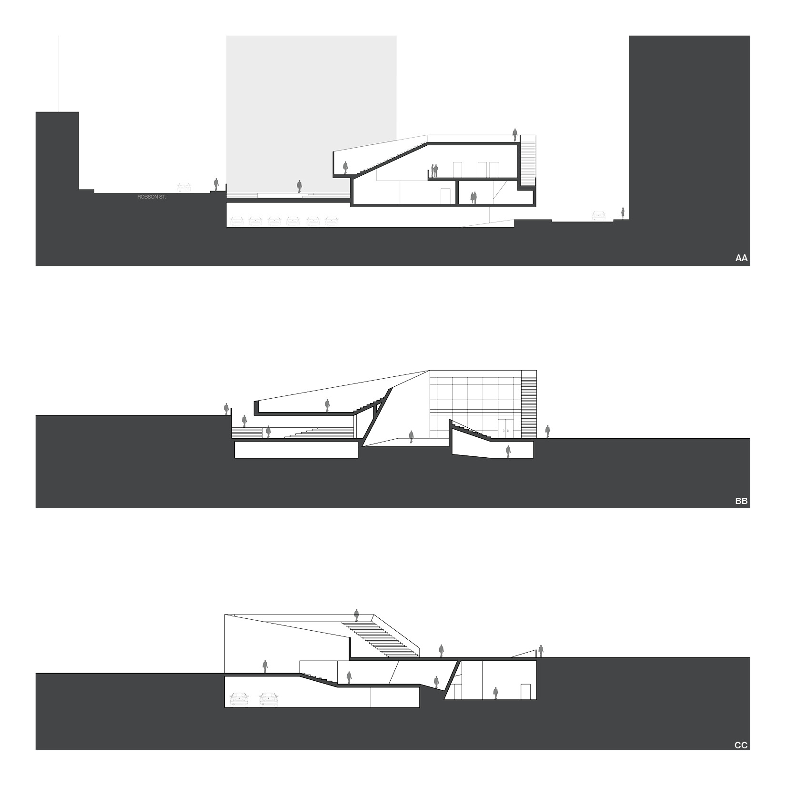

The proposal of “Urban Knotting” at the corner of Broughton St. and Robson St. in downtown Vancouver fuses architecture with the surrounding street-scape to create an experiential architecture that connects and regenerates its diverse neighbourhoods. The design addresses two critical characteristics of the site: a drastic change in topography and the highly mixed culture of its surroundings. With a dimension of 20m x 20m, the site is so intensely tilted that the level difference between the highest and the lowest corner is 7 meters. The proposal creates a large roof garden that “floated” above a gentle ramp that runs through a series of private recreational programs below while connecting the two levels across the site. The overall geometric form also provides an inviting plaza, a green wall and a view to the English Bay.
